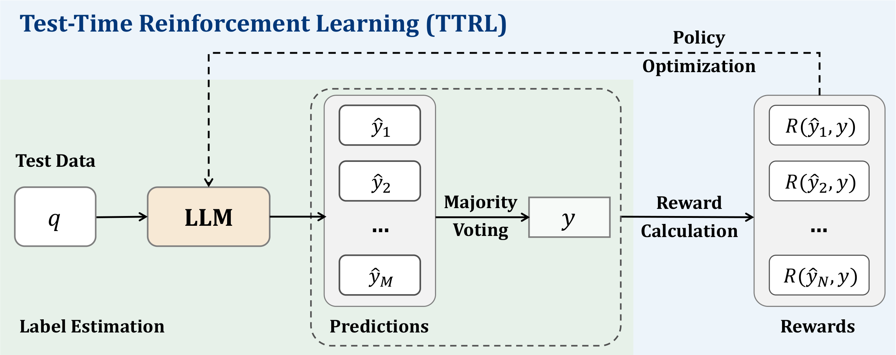
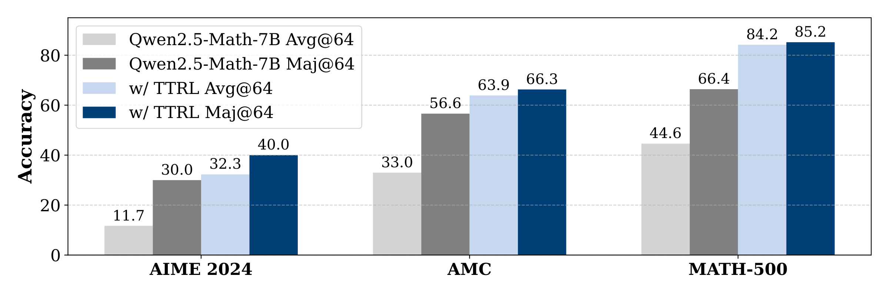
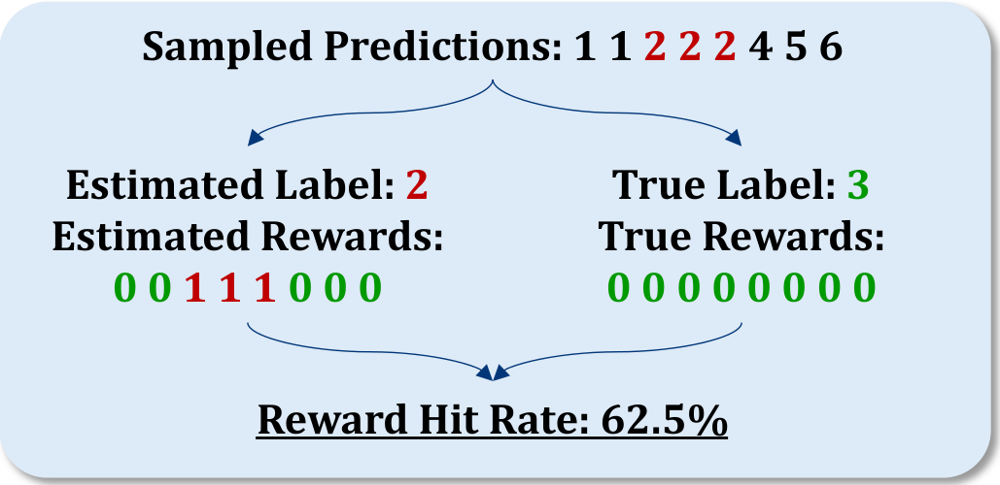

TTRL：在无标签测试数据上做强化学习，用「多数投票」自己造 reward
TTRL: Test-Time Reinforcement Learning
PRIME-RL/TTRL）。
①开源贡献 Open-source Artifacts
TTRL 以完整训练代码开源（MIT 协议），核实于 github.com/PRIME-RL/TTRL：基于 verl 框架（v0.4.1+），提供数据预处理（JSON→Parquet）与可一键复现的 bash 脚本（如 examples/ttrl/Qwen2.5/aime.sh），并附 W&B 训练日志与三次独立运行结果。本文不发布新模型权重或新数据集——它在已有的公开 benchmark 测试集上现场自训。
| 类型 | 是否开源 | 内容 / 链接 |
|---|---|---|
| 代码 Code | ✔ | github.com/PRIME-RL/TTRL · MIT · 基于 verl · 含训练脚本与复现配方（⭐ ~1.1k） |
| 模型权重 Weights | ✘ | 不发布成品权重；TTRL 产出的是「在某个测试集上现训」的 checkpoint。基座用公开模型（Qwen2.5-Math-1.5B/7B、Qwen2.5-7B/32B、Qwen3-8B、LLaMA-3.1/3.2、Mistral、DeepSeek-R1 等） |
| 数据集 Dataset | ✘ | 无新数据集；复用 AIME 2024、AMC、MATH-500、GPQA-Diamond 的公开测试集（仅用题目、不用标签） |
| 环境 / Benchmark | ✔ | 评测与训练脚本随仓库开源，可换模型/benchmark |
| 项目主页 / Demo | ✘ | 无独立 demo，以 GitHub 为准 |
②研究动机与贡献 Motivation & Contribution
背景与问题：RL 推理很强，但被「标签」卡住了
DeepSeek-R1、OpenAI o1 这类 Large Reasoning Models（LRMs）证明了 RL 是激发 long-CoT 推理的关键，但它们靠的是昂贵的人工标注数据。问题是：真正困难、真正新的题目源源不断地涌现，而它们恰恰没有标签——比如 o3 在 ARC-AGI-1 上能到 75.7%，到了新发布的 ARC-AGI-2 上只剩 4%。靠「堆更多标注数据 + 算力」既不可持续、也未必有效。Silver & Sutton 倡导的「experience 时代」正是在说：要让模型从自己的经验里自我进化，而不是死磕人类监督。
于是一个尖锐的技术问题浮现：测试时（test-time）做 RL，reward 从哪来？ 没有标准答案，rule-based reward 就无从计算。这既是 test-time training（TTT）的核心障碍，也暴露了当前 RL「严重依赖标注、难以规模化」的普遍局限。
本文的切入点
作者的关键观察是：Test-Time Scaling（TTS）里那套「多数投票 / majority voting」其实就能造出足够好的 reward。 既然投票出来的共识答案在实践中相当靠谱，那就把它当成伪标签，喂进 rule-based reward，再驱动一轮 RL。这样就把「推理时多采样几次」（TTS，省事但不改权重）和「测试时更新权重」（TTT）缝合进同一个 RL 闭环——模型自己生成经验、自己估计 reward、自己变强。
核心贡献
- 提出 TTRL：第一个系统性地在无标签测试数据上做 RL 的方法，用 majority voting 估计 reward，实现 LLM 的「自我进化」。
- 实证有效且普适：把 Qwen2.5-Math-7B 在 AIME 2024 上 +211%（12.9→40.2），四 benchmark 平均 +76%；在 1.5B→32B、base/instruct/LRM、Qwen/LLaMA/Mistral/DeepSeek 多个家族上都有一致增益，且兼容 GRPO/PPO/PRIME。
- 给出三个反直觉发现：TTRL 能超过自身 maj@n 这个「监督上界」、逼近「偷看标签直接训」的经验上界；并解释了「为什么标签估计很差时它还能work」（即 Lucky Hit）。
③方法 Method
TTRL 的 pipeline 一句话说清：对一道测试题，先用「多采样 + 多数投票」估出一个伪标签，再用「答案是否等于伪标签」算 0/1 reward，最后用这个 reward 跑标准 RL（默认 GRPO）更新权重。 整个过程只看题目、不看答案。

形式化：没有真标签的 RL 目标
给定题目（state）$x$，模型按 policy $\pi_\theta(y\mid x)$ 采样输出（action）$y$。没有 ground-truth，于是重复采样 $N$ 份候选 $\{y_1,\dots,y_N\}$，用某种聚合（这里是多数投票）得到共识输出 $y^*$ 当作「最优 action 的代理」。环境据此给 reward $r(y, y^*)$。优化目标与梯度更新就是标准 policy gradient：
$$\max_{\theta}\ \mathbb{E}_{y\sim\pi_\theta(\cdot\mid x)}\big[\,r(y, y^*)\,\big],\qquad \theta \leftarrow \theta + \eta\,\nabla_\theta\,\mathbb{E}_{y\sim\pi_\theta(\cdot\mid x)}\big[\,r(y, y^*)\,\big].$$
这里 $\eta$ 是学习率。和普通 RL 唯一的区别，就是 $y^*$ 不是人给的标签，而是模型自己投票投出来的。
Majority Voting Reward：就两步
给定题目 $x$，先让 LLM 生成一组输出，answer extractor 抽出预测答案集合 $P=\{\hat y_i\}_{i=1}^N$；对 $P$ 做多数投票得到出现最频繁的预测 $y$（即伪标签）。然后用最朴素的 rule-based reward：
$$R(\hat y_i,\,y)=\begin{cases}1, & \text{if } \hat y_i = y,\\[2pt] 0, & \text{otherwise.}\end{cases}$$
就是「你的答案等于投票答案就得 1 分，否则 0 分」。伪代码也只有十几行：抽答案 → Counter 数出多数答案 → 逐个比对打分。
⚠️ 超参敏感：temperature 设 0.6 vs 1.0、batch size 设置不当都会导致熵不下降、训练崩掉——难/小数据集需要更高 temperature 与更多 episodes 来充分探索。
④实验评估 Evaluation
评测设置
- Benchmark：3 个数学推理——AIME 2024（竞赛级，极难）、AMC、MATH-500；外加 GPQA-Diamond（研究生级、Google-proof 的科学问答）。每个 benchmark 单独跑 TTRL 再评测。
- 对比基线：主要和 backbone 模型自身比（因为「用 TTT 做推理」此前没人做过）；附录 A 另与在大规模有标签数据上训练的 SOTA RL 方法对比。
- 指标：pass@1（越高越好，非零温采 16 份取平均；部分用 greedy）；分析里还看 maj@n（多数投票准确率）、avg@n、以及 label accuracy / reward accuracy。
主要结果
下表是 6 个代表性模型（原文 Table 1，pass@1）。所有模型在 AIME 2024 上最少 +105%，1.5B 模型在 MATH-500 上单点暴涨 40.3。
| 模型 | AIME 2024 | AMC | MATH-500 | GPQA | Avg |
|---|---|---|---|---|---|
| Qwen2.5-Math-1.5B | 7.7 | 28.6 | 32.7 | 24.9 | 23.5 |
| ＋TTRL | 15.8 | 48.9 | 73.0 | 26.1 | 41.0 |
| Qwen2.5-Math-7B | 12.9 | 35.6 | 46.7 | 29.1 | 31.1 |
| ＋TTRL | 40.2 (+211%) | 68.1 | 83.4 | 27.7 | 54.9 (+76.5%) |
| Qwen2.5-7B | 7.9 | 34.8 | 60.5 | 31.8 | 33.8 |
| ＋TTRL | 23.3 | 56.6 | 80.5 | 33.6 | 48.5 |
| Qwen2.5-32B | 7.9 | 32.6 | 55.8 | 33.2 | 32.4 |
| ＋TTRL | 24.0 | 59.3 | 83.2 | 37.7 | 51.1 |
| Qwen3-8B* | 26.9 | 57.8 | 82.3 | 48.1 | 53.8 |
| ＋TTRL | 46.7 | 69.1 | 89.3 | 53.0 | 64.5 |
更多家族（LLaMA-3.2-3B、Mistral、DeepSeek-Math、DeepSeek-R1-LLaMA-8B 等）见原文 Table 2：连已经做过昂贵 post-training 的 LRM（DeepSeek-R1-LLaMA-8B、Skywork-OR1、Qwen3-8B thinking）都还能再涨约 10 分。诚实地说：增益高度依赖 backbone 是否「有底子」——Mistral-Nemo 在 AIME 上甚至 −0.8，弱基座在难任务上几乎吃不到红利（见下文 Q3）。
三个关键分析（也是全文的灵魂）
Q1 · 能多强？连两个「上界」都被它逼近甚至越过。 ① 直觉上 TTRL 的天花板应该是初始模型的 maj@n（因为监督信号就来自投票）——但训练后 avg@16 反超初始 maj@16 20 多分；avg@64 也全面高于 backbone 的 maj@64。② 另一个上界是「RL (Leakage)」即偷看真标签直接在测试集上训，TTRL 的学习曲线竟紧贴它。

Q2 · 为什么能work？核心是「Lucky Hit」。 在 AIME 这种难题上，多数投票估出的标签准确率只有 ~37%，可 reward 准确率却高达 ~92%。为什么？因为数学 verifier 是靠「比对」给 0/1 的：对一个错的预测，只要它和（同样错的）伪标签不一样，就照样会被正确地判为 0 分——而这正是我们想要的负 reward。当模型很弱、错误答案高度分散（最高频答案只占 16.6%）时，绝大多数错误预测都能「碰巧」拿到正确的 0 分。于是出现反直觉结论：模型越弱、错得越散，reward 估计反而越准。

1 1 2 2 2 4 5 6 投票出错误伪标签 2。但拿伪标签 2 去打分得到的 reward（0 0 1 1 1 0 0 0）和拿真标签 3 打分（全 0）相比，8 个里有 5 个 reward 是对的（Reward Hit Rate 62.5%）——标签错了，多数 reward 仍然对。另外两根支柱：reward 比 label 更稠密（一个 rollout 里多份输出给了多次「纠错」机会，比单一标签鲁棒）；以及 online learning——TTRL 是在线 RL，模型一边变强、投票质量一边提高，形成传统离线 self-training 没有的「越滚越好」的正反馈（pass@1 与 maj@n 同步上升，见原文 Figure 6）。
Q3 · 什么时候会失败？ TTRL 本质仍是 RL，继承了 RL 的老毛病并被放大：① 缺乏先验——题目太难、超出 backbone 知识范围时直接学不动。MATH-500 按难度分 L1–L5 的消融显示：L1 涨 +45.4 分（+175%），到 L5 只涨 +16.8 分（+75%），越难红利越薄。② 超参不当——temperature/batch/episodes 设错会让熵持续偏高、训练失败。
⑤洞见 Insights
② 「监督信号的上界」不等于「学习的上界」。 用 maj@n 当 reward，却能稳定超过 maj@n 本身——因为 online RL 把静态的投票分布变成了动态的、随能力提升而提升的课程。这给「self-training 必然受限于初始模型」的旧认知打了个问号：在线性 + RL 的组合下，自举（bootstrap）可以真的往上走。
③ 它把 TTS 与 TTT 缝在了一起。 此前「多采样投票」（TTS，不改权重）和「测试时训练」（TTT，改权重）是两条线；TTRL 用「投票造 reward → RL 改权重」把它们合一，且逼近「偷看答案直接训」的上界——这意味着无标签的测试集本身就是一座可开采的训练数据矿。
局限与未来
作者坦承这是 test-time RL 的初步探索：对「先验知识」与「超参」的影响还需更系统的消融；方法对弱基座 / 超难任务无能为力（没有 data filtering 做 curriculum）；也存在 RL 固有的崩溃风险。未来方向包括：收敛性的理论分析（如何朝两个上界优化）、流式数据上的在线学习 / test-time adaptation、大规模自监督 RL 训练，以及推广到 agentic 任务与科学发现等开放域。
与相关工作的关系
用本文自身的框架定位：相比 TTS（self-consistency、best-of-N、MCTS、reward-guided search——只在推理时花算力、不改权重），TTRL 把那份算力转化成了权重更新。相比 TTT（多用于视频、少量用于 LLM），TTRL 首次把 test-time scaling 与 RL 结合。相比 RL for reasoning（RLHF/PPO、DeepSeek-R1 的 GRPO 等），它们都要有标签的训练数据与可验证输出；TTRL 去掉了标签依赖。相比已有的 self-rewarding / self-play（多面向开放域指令、或用 DPO 这类偏好优化），TTRL 聚焦数学推理、且坚持在线 RL。这些区分均出自本文自身论述。